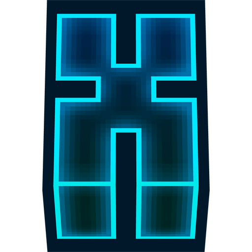

Schnell startklar
Installieren, anmelden und loslegen. Der Launcher kümmert sich um die technischen Details im Hintergrund.

X Launcher GitHub ↗X Launcher bringt Fabric, Mods, Profile und Server in eine schnelle, aufgeräumte Oberfläche. Weniger Herumklicken, mehr Spielen.
Kostenlos · 64-Bit · Direkter Download vom offiziellen GitHub Release
Installieren, anmelden und loslegen. Der Launcher kümmert sich um die technischen Details im Hintergrund.
Verwalte deine Fabric-Mods übersichtlich und stelle dir dein persönliches Minecraft-Erlebnis zusammen.
Neue Launcher-Versionen werden automatisch erkannt. Auch dieser Download-Button führt stets zur neuesten EXE.
Bereit für die nächste Runde?